Accolades & Recognition
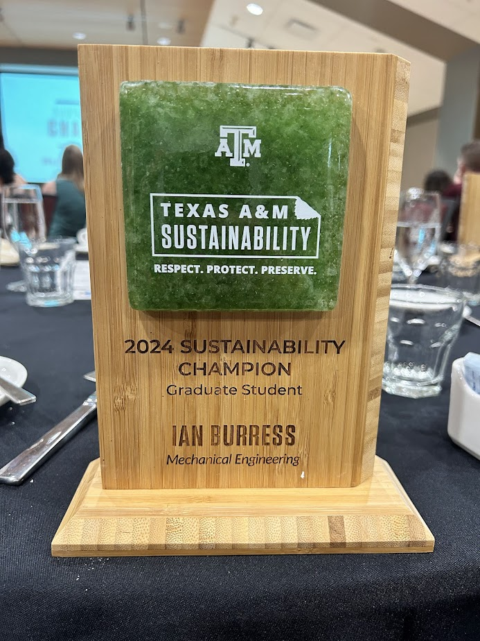
Texas A&M Graduate Sustainability Champion
Recognized for demonstrating exemplary effort, dedication, and leadership in fostering a campus culture of sustainability.
Texas A&M National TV Spotlight
Represented core institution values, highlighting engineering deployment and alternative energy systems.
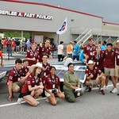
American Solar Challenge Perseverance Award
Awarded to the team for enduring external complications, showing extreme resilience and trackside technical adaptation to complete the competition framework.
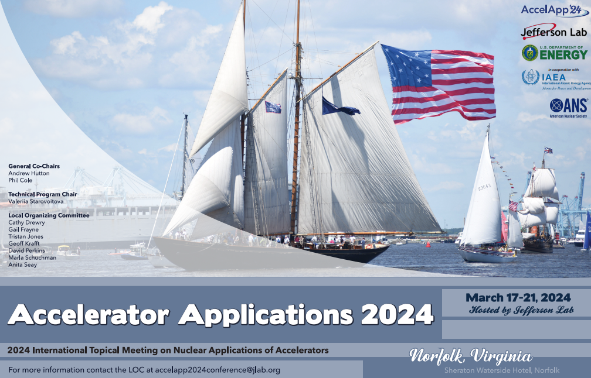
Accelerator Conference Presenter
Presented on behalf of Dr. David Staack's Plasma Lab at Texas A&M regarding lab findings as well as core personal alternative energy and plasma applications research.
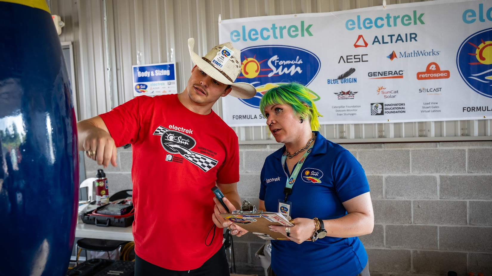
American Solar Challenge Body & Sizing Judge
Served as a technical inspector for scrutineering track validation steps at the Formula Sun Grand Prix event held at the National Corvette Museum Motorsports Park.
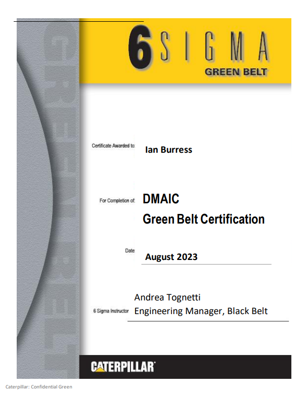
Six Sigma Green Belt Certification
Certified in Caterpillar's custom process development tracks, implementing DMAIC quantitative project optimization architectures.
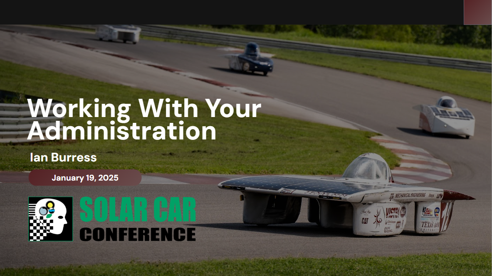
American Solar Challenge Conference Speaker
Instructed technical operations, multi-zone logistics management strategies, and regulatory coordination structures to 275+ attendees representing 28 racing platforms.
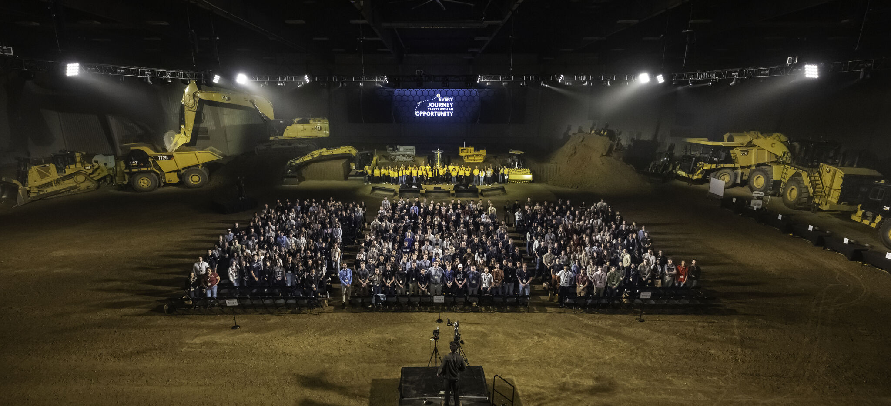
Caterpillar Intern Committee Chair
Led professional onboarding committees bridging undergraduate technical talent networks with early career engineering environments.
Texas A&M Foundation Interview Profile
Participated in the specialized engineering spotlight documentation series to communicate research efficacy and program framework resources to global donors.
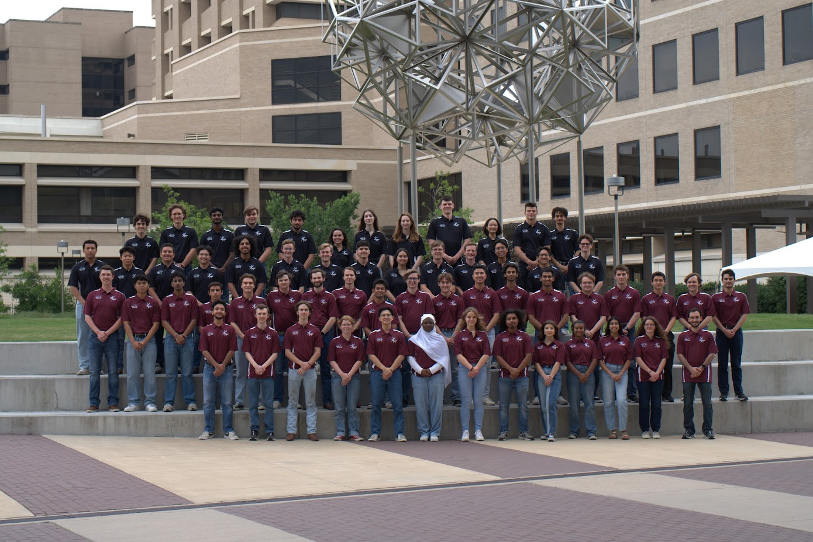
Texas A&M Solar Car Alumni Advisor
Gathers alumni framework perspective to advise team engineering tracks, managing mentorship modules like resume evaluations, placement, and engineering workflow continuity.
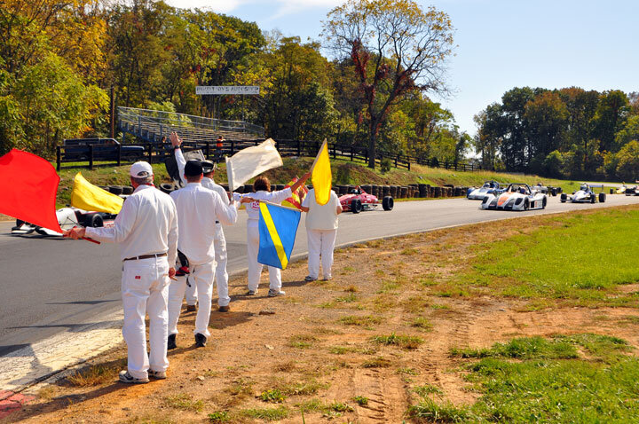
Sports Car Club of America Regional Marshal
Flagging & communications intervention marshal with active track deployment experience spanning Tarheel, Old Dominion, and Houston region professional circuits.
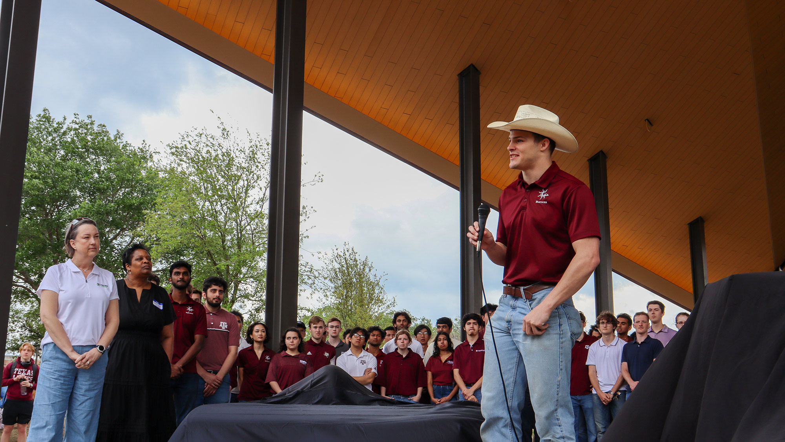
One Student's Sustainable Legacy: Removing 'Forever Chemicals' and Racing Solar Cars
Graduate student media profile spotlighting specialized research tracks involving environmental chemical decomposition and technical leadership rebuilding the solar car platform.
Read Full News Article →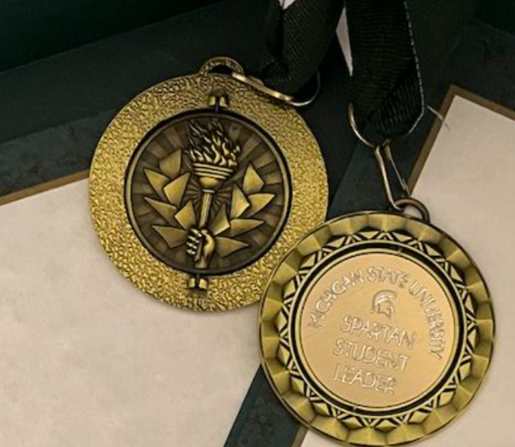
MSU Student Leadership Award
Medal awarded in recognition for contributions and management impact as an executive board director on the Michigan State Solar Car Racing Team.
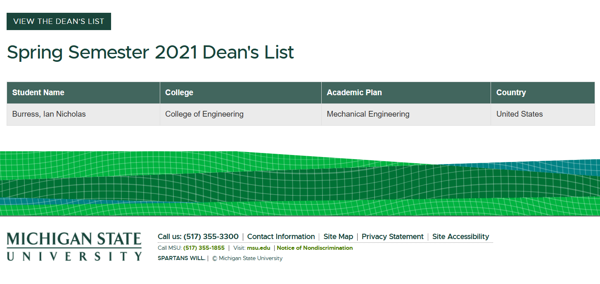
MSU Dean's List Honors
Maintained full-time engineering honors standing with a 3.50 or better grade-point average across core mathematics and thermodynamic tracks.
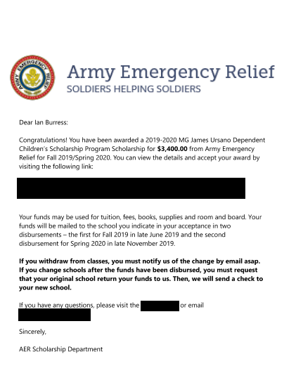
Army Emergency Relief Scholarship
Competitive academic scholarship endowment awarded to military dependents demonstrating sustained technical excellence and grade thresholds.
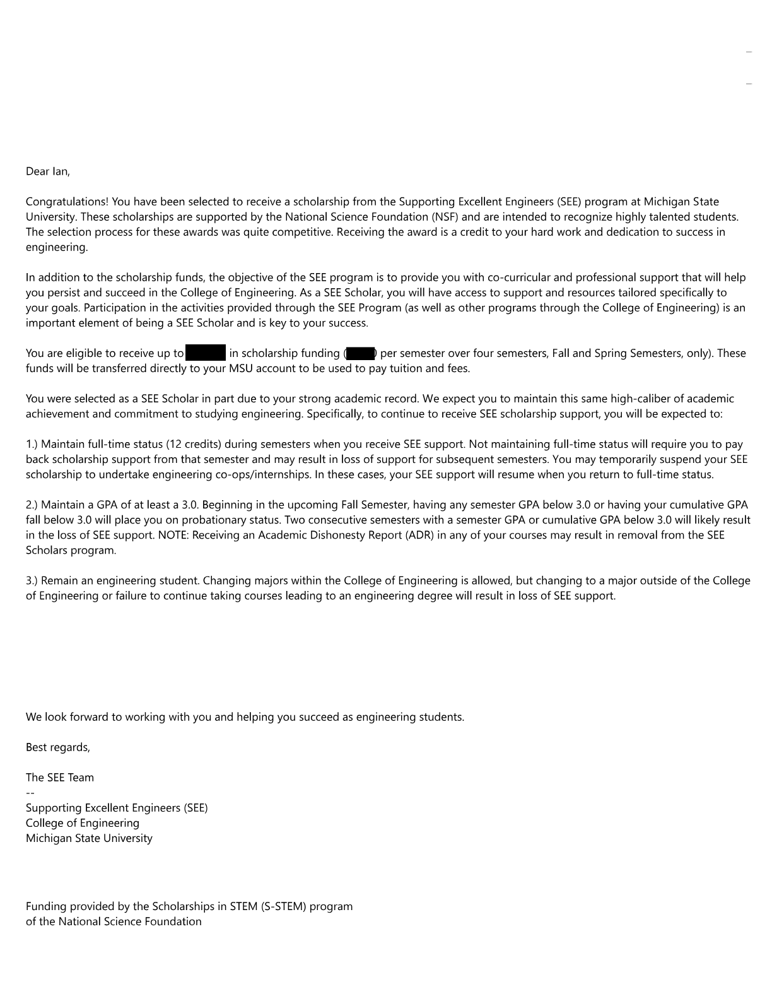
Supporting Engineering Excellence Scholarship
Selected for the specialized SEE Scholars track program, supported via grants from the National Science Foundation's S-STEM initiative.
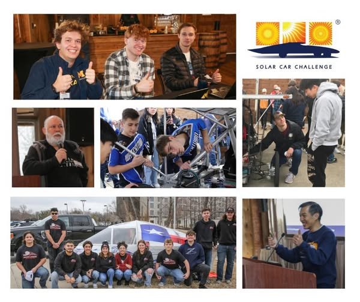
Solar Car Challenge Guest Speaker
Spoke to regional fields regarding alternative fuel parameters, advanced telemetry, and technical mechanical careers within modern motorsports layout maps.
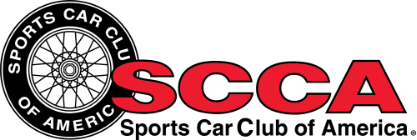
SCCA F&C Track Safety Certification
Certified in SCCA's national Flagging & Communication methodologies, qualifying for marshaling assignments spanning F1, IndyCar, IMSA, and NASCAR events.
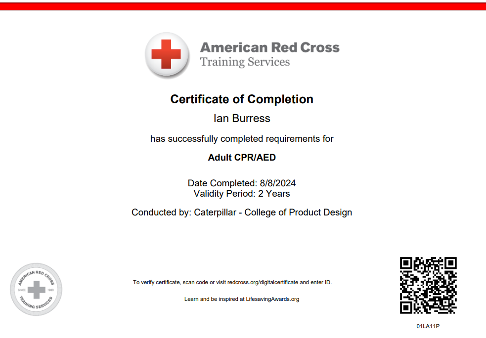
American Red Cross CPR Certification
Certified first-response Cardiopulmonary Resuscitation credentials completed via American Red Cross standard guidelines.
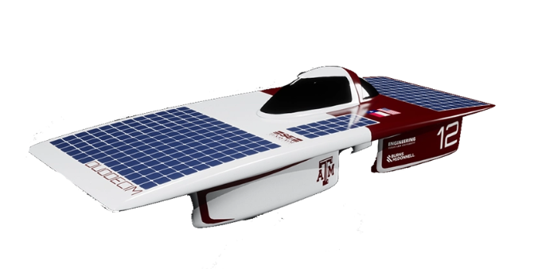
Spirit Magazine: Solar Car Success Supported by Peterbilt
Involved in the specialized institutional documentation print highlighting major heavy-duty commercial automotive infrastructure and power partnerships.
View Digital Feature →
Racing Across America: Solar Team Secures 11th Nationally
National news coverage outlining the solar team's cross-country racing deployment parameters, competitive divisions, and final scoring standings.
Read Full Press Release →"Meet the Spartans" Wrestling Feature
Official collegiate athletic roster profile and introductory media feature highlighting my transition into the NCAA Division I wrestling program.
View Roster Feature →MSU SEE Scholars Profile
Featured academic profile for the Supporting Engineering Excellence (SEE) program, funded by a grant from the National Science Foundation.
View Scholar Profile →Big Ten Conference Spotlight
Highlighted by the Big Ten Conference network following my freshman year, detailing the balance of collegiate athletics with a rigorous mechanical engineering curriculum.
View Social Feature →